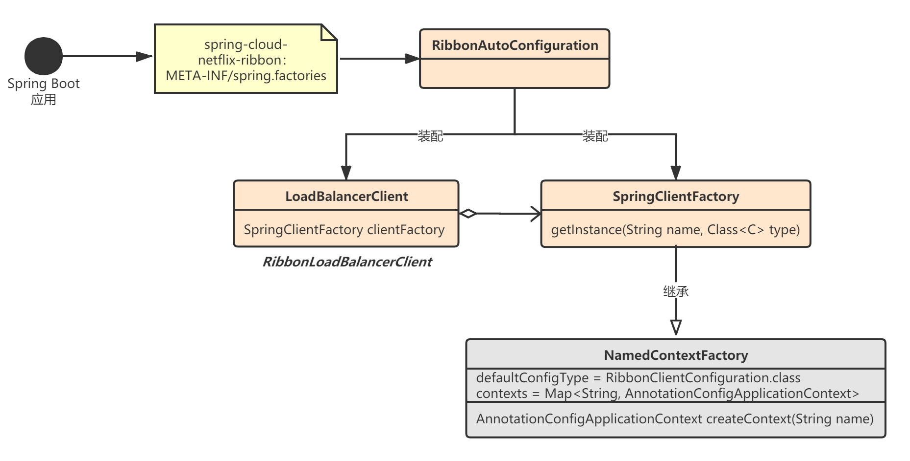

在正式讲解Ribbon的工作流程之前，我必须先将Ribbon客户端的配置原理讲清楚。Ribbon客户端一共有三种级别的配置，优先级依次从高到低：
@RibbonClient的自定义配置；@RibbonClients的全局配置；org.springframework.cloud.netflix.ribbon.RibbonClientConfiguration的默认配置。也就是说，Ribbon客户端首先使用自定义配置，自定义配置中找不到再找全局配置，全局配置也找不到则使用默认配置。
我们必须搞清楚Spring Cloud Netglix Ribbon启动时，RibbonClient是如何进行装配的，以及是如何整合上述三种配置的，否则你不可能有能力基于Ribbon进行深度定制开发。网上99%的文章都没有将这个问题讲清楚讲透彻，究其原因还是太浮躁，不懂得深度思考。
作为本章内容的补充，读者还可以参考Spring Cloud Netflix官方文档：https://docs.spring.io/spring-cloud-netflix/docs/2.2.5.RELEASE/reference/html/#spring-cloud-ribbon。
我们先来看下如何对Ribbon客户端进行配置，Java Bean是最常用也是最推荐的方式，我这里用Java Bean方式创建示例代码。
自定义配置使用@RibbonClient注解，name表示Ribbon客户端名称，configuration表示自定义的Ribbon客户端配置类。我们可以在自定义的Ribbon客户端配置类中通过@Bean方式添加各种Ribbon核心组件，比如IRule、IPing等等：
@Configuration
@RibbonClient(name = "myRibbonClient", configuration = MyRibbonClientConfig.class)
public class MyRibbonClient {
}
@Configuration
public class MyRibbonClientConfig {
@Bean
public IRule myRibbonRule() {
// ...
}
//...
}
我们一个应用中一般会有许多Ribbon客户端，那么有些客户端肯定是有一些通用配置，所以我们可以通过@RibbonClients进行全局的Ribbon客户端配置：
@Configuration
@RibbonClients(defaultConfiguration = GlobalRibbonClientConfig.class)
public class MyRibbonClients {
}
@Configuration
public class GlobalRibbonClientConfig {
@Bean
public IRule golalRibbonRule() {
// ...
}
//...
}
Spring Cloud Netflix Ribbon还为我们提供了一个默认Ribbon客户端配置类：org.springframework.cloud.netflix.ribbon.RibbonClientConfiguration。也就是说只要我们引入了ribbon依赖，即使只通过yml配置一个Ribbon客户端，这个客户端也具有默认配置。
比如，下面这个应用，名称为myRibbonClient的Ribbon客户端默认就具有RibbonClientConfiguration配置。
# application.yml
server:
port: 8000
spring:
application:
name: greeting-client
# 配置一个Ribbon客户端，名称为myRibbonClient，一般这里可以用服务提供方的名称
myRibbonClient:
ribbon:
listOfServers: localhost:8080,localhost:8088
# 禁用Eureka
ribbon:
eureka:
enabled: false
我这里再强调一下：在Spring Cloud Netflix Ribbon中，Ruibbon客户端的上述三种配置优先级从高到低：
@RibbonClient注册的自定义客户端配置类，优先级最高；@RibbonClients注册的全局配置类（defaultConfiguration），优先级次高；RibbonClientConfiguration配置类，优先级最低。了解了Ribbon客户端的三种配置，我们再来看看Ribbon是如何进行初始化的，Spring又是在什么时候帮我们把Ribbon客户端需要的配置类以及那些核心组件（IP ing、IRule...）初始化好的呢？
当我们在项目里引入Spring Cloud Netflix Ribbon相关依赖后，Spring Boot应用启动时，就会触发自动装配：
# spring.factories
org.springframework.boot.autoconfigure.EnableAutoConfiguration=\
org.springframework.cloud.netflix.ribbon.RibbonAutoConfiguration
spring.factories文件可以用来配置一些自动装配类，这些自动装配类可以将当前项目包以外的bean（即在pom文件中添加的依赖jar）注册到Spring容器。

自动装配类RibbonAutoConfiguration所做的事情如上图所示，最主要是做了两件事情：
创建了一个Ribbon客户端对象：RibbonLoadBalancerClient；
创建了一个SpringClientFactory对象，它的核心作用是给每个Ribbon客户端创建一个独立的Spring应用上下文ApplicationContext，并在其中加载对应的配置及Ribbon核心组件（IPing、IRule...）。
自动装配类RibbonAutoConfiguration，这个类的作用主要就是创建并装配Ribbon客户端：
@Configuration
@ConditionalOnClass({ IClient.class, RestTemplate.class, AsyncRestTemplate.class, Ribbon.class})
@RibbonClients
@AutoConfigureAfter(name = "org.springframework.cloud.netflix.eureka.EurekaClientAutoConfiguration")
@AutoConfigureBefore({LoadBalancerAutoConfiguration.class, AsyncLoadBalancerAutoConfiguration.class})
@EnableConfigurationProperties(RibbonEagerLoadProperties.class)
public class RibbonAutoConfiguration {
// 某个Ribbon客户端的所有配置
// 比如@RibbonClients(defaultConfiguration = "globalRibbonClientConfig")和@RibbonClient(name = "myRibbonClient", configuration="myRibbonClientConfig")
@Autowired(required = false)
private List<RibbonClientSpecification> configurations = new ArrayList<>();
// ribbon是否懒加载的配置文件
@Autowired
private RibbonEagerLoadProperties ribbonEagerLoadProperties;
// Spring会给每个Ribbon客户端创建独立的ApplicationContext上下文
// 并在其上下文中创建Ribbon客户端对应的核心组件：如IClient、ILoadbalancer等
@Bean
public SpringClientFactory springClientFactory() {
SpringClientFactory factory = new SpringClientFactory();
factory.setConfigurations(this.configurations);
return factory;
}
// Spring创建的带负载均衡功能的Ribbon客户端
@Bean
@ConditionalOnMissingBean(LoadBalancerClient.class)
public LoadBalancerClient loadBalancerClient() {
return new RibbonLoadBalancerClient(springClientFactory());
}
// 到Spring Environment中加载针对Ribbon客户端的核心组件接口实现类
@Bean
@ConditionalOnMissingBean
public PropertiesFactory propertiesFactory() {
return new PropertiesFactory();
}
// 如果不是懒加载，启动时就使用RibbonApplicationContextInitializer加载并初始化Ribbon客户端配置
@Bean
@ConditionalOnProperty(value = "ribbon.eager-load.enabled", matchIfMissing = false)
public RibbonApplicationContextInitializer ribbonApplicationContextInitializer() {
return new RibbonApplicationContextInitializer(springClientFactory(),
ribbonEagerLoadProperties.getClients());
}
//...
}
SpringClientFactory，这个类的主要作用是给每个Ribbon客户端创建一个独立的Spring应用上下文ApplicationContext，并加载其对应的配置类和核心组件的实现类：
public class SpringClientFactory extends NamedContextFactory<RibbonClientSpecification> {
static final String NAMESPACE = "ribbon";
public SpringClientFactory() {
super(RibbonClientConfiguration.class, NAMESPACE, "ribbon.client.name");
}
public <C extends IClient<?, ?>> C getClient(String name, Class<C> clientClass) {
return getInstance(name, clientClass);
}
// name代表当前Ribbon客户端的ID，type代表要获取的Ribbon核心组件对象的类型，如IPing、IRule
@Override
public <C> C getInstance(String name, Class<C> type) {
// 先尝试从父类NamedContextFactory获取，父类保存了客户端和对应的ApplicationContext
C instance = super.getInstance(name, type);
if (instance != null) {
return instance;
}
// 如果没有，则根据IClientConfig中的配置找到具体的实现类，再通过反射初始化后放到客户端对应的ApplicationContext中
IClientConfig config = getInstance(name, IClientConfig.class);
return instantiateWithConfig(getContext(name), type, config);
}
// 使用IClientConfig实例化
static <C> C instantiateWithConfig(AnnotationConfigApplicationContext context,
Class<C> clazz, IClientConfig config) {
C result = null;
try {
// 通过以IClientConfig为参数的构造创建clazz类实例
Constructor<C> constructor = clazz.getConstructor(IClientConfig.class);
result = constructor.newInstance(config);
} catch (Throwable e) {
// Ignored
}
// 如果没创建成功，使用无参构造
if (result == null) {
result = BeanUtils.instantiate(clazz);
// 调用初始化配置方法
if (result instanceof IClientConfigAware) {
((IClientConfigAware) result).initWithNiwsConfig(config);
}
// 处理自动织入
if (context != null) {
context.getAutowireCapableBeanFactory().autowireBean(result);
}
}
return result;
}
}
这个类是SpringClientFactory的父类，非常重要！它会为每一个Ribbon客户端创建一个上下文对象AnnotationConfigApplicationContext，然后保存在自己内部：
// NamedContextFactory.java
public abstract class NamedContextFactory<C extends NamedContextFactory.Specification>
implements DisposableBean, ApplicationContextAware {
// 维护Ribbon客户端对应的ApplicationContext上下文
private Map<String, AnnotationConfigApplicationContext> contexts = new ConcurrentHashMap<>();
// 维护Ribbon客户端的配置类，配置类就是@RibbonClient和@RibbonClients中设置的配置类
// key为Ribbon客户端名称，value为一个List，包含所有该客户端的配置类
private Map<String, C> configurations = new ConcurrentHashMap<>();
// 父ApplicationContext
private ApplicationContext parent;
// 默认配置类：RibbonClientConfiguration.class
private Class<?> defaultConfigType;
// 默认值：ribbon
private final String propertySourceName;
// 默认值：ribbon.client.name
private final String propertyName;
public NamedContextFactory(Class<?> defaultConfigType, String propertySourceName,
String propertyName) {
this.defaultConfigType = defaultConfigType;
this.propertySourceName = propertySourceName;
this.propertyName = propertyName;
}
protected AnnotationConfigApplicationContext getContext(String name) {
// 如果不存在该Ribbon客户端对应的上下文对象，则调用createContext(name)创建一个，然后缓存
if (!this.contexts.containsKey(name)) {
synchronized (this.contexts) {
if (!this.contexts.containsKey(name)) {
this.contexts.put(name, createContext(name));
}
}
}
// 如果存在，则直接返回
return this.contexts.get(name);
}
// 创建名为name的Ribbon客户端的ApplicationContext上下文
protected AnnotationConfigApplicationContext createContext(String name) {
AnnotationConfigApplicationContext context = new AnnotationConfigApplicationContext();
// 1.将所有自定义配置类注入到ApplicationContext中
if (this.configurations.containsKey(name)) {
for (Class<?> configuration : this.configurations.get(name)
.getConfiguration()) {
context.register(configuration);
}
}
// 2.将全局配置类注入到ApplicationContext中（通过@RibbonClients(defaultConfiguration=xxx)配置）
for (Map.Entry<String, C> entry : this.configurations.entrySet()) {
if (entry.getKey().startsWith("default.")) {
for (Class<?> configuration : entry.getValue().getConfiguration()) {
context.register(configuration);
}
}
}
// 3.将默认配置类RibbonClientConfiguration注入到ApplicationContext中
context.register(PropertyPlaceholderAutoConfiguration.class, this.defaultConfigType);
// 建议 ribbon.client.name=[配置的Ribbon客户名称，也就是name]的映射，并保存到spring environment中
context.getEnvironment().getPropertySources().addFirst(new MapPropertySource(
this.propertySourceName,
Collections.<String, Object> singletonMap(this.propertyName, name)));
// 设置父ApplicationContext，这样可以使得当前创建的子ApplicationContext可以使用父上下文中的Bean
if (this.parent != null) {
context.setParent(this.parent);
}
context.refresh();
return context;
}
public <T> T getInstance(String name, Class<T> type) {
AnnotationConfigApplicationContext context = getContext(name);
if (BeanFactoryUtils.beanNamesForTypeIncludingAncestors(context,
type).length > 0) {
return context.getBean(type);
}
return null;
}
}
根据如上逻辑可以看出，会从三个地方将Ribbon客户端相关的配置类注册到专门为其准备的ApplicationContext上下文中，并根据配置类创建Ribbon核心接口的实现类，即达到配置RibbonClient的目的：
RibbonClientConfiguration，并注册到其对应的ApplicationContext上下文。这里思考一个问题，既然NamedContextFactory.configurations这个Map里保存自定义的、全局的、默认的Ribbon客户端配置，那么这个配置类数据是从哪儿来的呢？
我们回顾下RibbonAutoConfiguration，可以看到它其实就是个 RibbonClientSpecification列表：
// RibbonAutoConfiguration.java
@Autowired(required = false)
private List<RibbonClientSpecification> configurations = new ArrayList<>();
@Bean
public SpringClientFactory springClientFactory() {
SpringClientFactory factory = new SpringClientFactory();
factory.setConfigurations(this.configurations);
return factory;
}
那么RibbonClientSpecification是什么？从哪儿来的？
RibbonClientSpecification就代表了一个Ribbon客户端配置，比如下面代码中，MyRibbonClientConfi就是一个自定义的Ribbon客户端配置，最终会被转化成RibbonClientSpecification：
@Configuration
@RibbonClient(name = "myRibbonClient", configuration = MyRibbonClientConfig.class)
public class MyRibbonClient {
}
@Configuration
public class MyRibbonClientConfig {
@Bean
public IRule myRibbonRule() {
// ...
}
//...
}
那么是在哪里转化的呢？我们回顾RibbonAutoConfiguration，它有个@RibbonClients注解：
@Configuration
@Conditional(RibbonAutoConfiguration.RibbonClassesConditions.class)
@RibbonClients
@AutoConfigureAfter(
name = "org.springframework.cloud.netflix.eureka.EurekaClientAutoConfiguration")
@AutoConfigureBefore({ LoadBalancerAutoConfiguration.class,
AsyncLoadBalancerAutoConfiguration.class })
@EnableConfigurationProperties({ RibbonEagerLoadProperties.class,
ServerIntrospectorProperties.class })
public class RibbonAutoConfiguration {
//...
}
@Configuration(proxyBeanMethods = false)
@Retention(RetentionPolicy.RUNTIME)
@Target({ ElementType.TYPE })
@Documented
@Import(RibbonClientConfigurationRegistrar.class)
public @interface RibbonClients {
RibbonClient[] value() default {};
Class<?>[] defaultConfiguration() default {};
}
上面有一个关键类RibbonClientConfigurationRegistrar。
@RibbonClients注解中导入了RibbonClientConfigurationRegistrar类，这个类是Spring提供的ImportBeanDefinitionRegistrar的子类：
public class RibbonClientConfigurationRegistrar implements ImportBeanDefinitionRegistrar {
@Override
public void registerBeanDefinitions(AnnotationMetadata metadata,
BeanDefinitionRegistry registry) {
// 1 @RibbonClients注解
Map<String, Object> attrs = metadata.getAnnotationAttributes(
RibbonClients.class.getName(), true);
// 1.1 value是RibbonClient[]，即注册每个Ribbon客户端配置的自定义configuration配置类
if (attrs != null && attrs.containsKey("value")) {
AnnotationAttributes[] clients = (AnnotationAttributes[]) attrs.get("value");
for (AnnotationAttributes client : clients) {
registerClientConfiguration(registry, getClientName(client),
client.get("configuration"));
}
}
// 1.2 找到@RibbonClients注解的defaultConfiguration，即全局配置
// 注册名为default.Classname.RibbonClientSpecification的RibbonClientSpecification
if (attrs != null && attrs.containsKey("defaultConfiguration")) {
String name;
if (metadata.hasEnclosingClass()) {
name = "default." + metadata.getEnclosingClassName();
} else {
name = "default." + metadata.getClassName();
}
registerClientConfiguration(registry, name,
attrs.get("defaultConfiguration"));
}
// 2 @RibbonClient注解
// 注册某个Ribbon客户端的自定义configuration配置类
Map<String, Object> client = metadata.getAnnotationAttributes(
RibbonClient.class.getName(), true);
String name = getClientName(client);
if (name != null) {
registerClientConfiguration(registry, name, client.get("configuration"));
}
}
private String getClientName(Map<String, Object> client) {
if (client == null) {
return null;
}
String value = (String) client.get("value");
if (!StringUtils.hasText(value)) {
value = (String) client.get("name");
}
if (StringUtils.hasText(value)) {
return value;
}
throw new IllegalStateException(
"Either 'name' or 'value' must be provided in @RibbonClient");
}
private void registerClientConfiguration(BeanDefinitionRegistry registry,
Object name, Object configuration) {
BeanDefinitionBuilder builder = BeanDefinitionBuilder
.genericBeanDefinition(RibbonClientSpecification.class);
builder.addConstructorArgValue(name);
builder.addConstructorArgValue(configuration);
registry.registerBeanDefinition(name + ".RibbonClientSpecification",
builder.getBeanDefinition());
}
}
ImportBeanDefinitionRegistrar是Spring提供的一个扩展点，凡是实现了该接口的子类，在Spring容器启动后都会执行
registerBeanDefinitions这个方法，实现bean的自定义注入。
最终，真相大白了，我来总结下：
@RibbonClient 和 @RibbonClients 注解加载的configurations集合中找当前Ribbon客户端name对应的自定义配置类，如有，就注册到上下文；@RibbonClients注解加载的 default.开头 的全局配置类，如有，就注册到上下文；RibbonClientConfiguration到上下文。由于默认配置类
RibbonClientConfiguration中都有@ConditionalOnMissingBean注解，所以不会覆盖自定义配置类，它优先级是最低的。
我上面说的这些Ribbon客户端依赖的配置类和各种核心组件，默认情况并不会在Spring Boot应用启动时就注册到上下文中，而是在首次执行SpringClientFactory.getInstance(String name, Class<C> type)时进行创建，这是一种典型的懒加载模式。整体流程如下图：
举个例子，比如我们获取与Ribbon客户端关联的负载均衡器：
@RestController
public class MyController{
@Autowired
private LoadBalancerClient loadBalancerClient;
@GetMapping("/hello/{name}")
public String hello(@PathVariable("name") String name) {
ILoadBalancer loadBalancer = loadBalancerClient.getLoadBalancer("myRibbonClient");
return "my name is " + name;
}
}
LoadBalancerClient的默认实现是RibbonLoadBalancerClient，看下它的getLoadBalancer方法，实际是调用了内部的SpringClientFactory.getLoadBalancer()：
// LoadBalancerClient.java
protected ILoadBalancer getLoadBalancer(String serviceId) {
return this.clientFactory.getLoadBalancer(serviceId);
}
LoadBalancerClient是在
RibbonAutoConfiguration自动装配时创建的，而SpringClientFactory也是在自动装配时注入到LoadBalancerClient内部的。
我们看下SpringClientFactory.getLoadBalancer()的实现，内部调用了父类NamedContextFactory的getInstance方法获取实例：
// SpringClientFactory.java
public ILoadBalancer getLoadBalancer(String name) {
return getInstance(name, ILoadBalancer.class);
}
public <C> C getInstance(String name, Class<C> type) {
// 调用父类NamedContextFactory获取实例
C instance = super.getInstance(name, type);
if (instance != null) {
return instance;
}
IClientConfig config = getInstance(name, IClientConfig.class);
return instantiateWithConfig(getContext(name), type, config);
}
NamedContextFactory我们上一节已经分析过了，它会负责创建每个Ribbon客户端对应的上下文对象AnnotationConfigApplicationContext，以及Ribbon配置类的注入。
它的核心方法就是createContext，即使我们的Ribbon客户端什么都不配置，它也会去创建默认的配置类对象RibbonClientConfiguration。
RibbonClientConfiguration就是默认的Ribbon客户端配置类，可以看到，它会为我们创建IClientConfig、IRule、IPing、ILoadBalancer等各种默认的Ribbon核心组件，并注册到Spring IoC容器中：
@Configuration(proxyBeanMethods = false)
@EnableConfigurationProperties
@Import({ HttpClientConfiguration.class, OkHttpRibbonConfiguration.class,
RestClientRibbonConfiguration.class, HttpClientRibbonConfiguration.class })
public class RibbonClientConfiguration {
@RibbonClientName
private String name = "client";
@Autowired
private PropertiesFactory propertiesFactory;
@Bean
@ConditionalOnMissingBean
public IClientConfig ribbonClientConfig() {
// 创建默认客户端配置，所有Ribbon客户端都默认使用该配置
DefaultClientConfigImpl config = new DefaultClientConfigImpl();
config.loadProperties(this.name);
config.set(CommonClientConfigKey.ConnectTimeout, DEFAULT_CONNECT_TIMEOUT);
config.set(CommonClientConfigKey.ReadTimeout, DEFAULT_READ_TIMEOUT);
config.set(CommonClientConfigKey.GZipPayload, DEFAULT_GZIP_PAYLOAD);
return config;
}
@Bean
@ConditionalOnMissingBean
public IRule ribbonRule(IClientConfig config) {
// 查看propertiesFactory是否有关于当前接口的配置，如有就使用，并创建实例返回
if (this.propertiesFactory.isSet(IRule.class, name)) {
return this.propertiesFactory.get(IRule.class, config, name);
}
// spring cloud 默认配置
ZoneAvoidanceRule rule = new ZoneAvoidanceRule();
rule.initWithNiwsConfig(config);
return rule;
}
//...
}
这里有一个关键的IClientConfig，它的默认实现是DefaultClientConfigImpl：
// DefaultClientConfigImpl.java
@Override
public void loadProperties(String restClientName){
enableDynamicProperties = true;
setClientName(restClientName);
// 1、使用Netflix Archaius的ConfigurationManager从Spring env中加载“ribbon.配置项”这类默认配置
loadDefaultValues();
// 2、使用Netflix Archaius的ConfigurationManager从Spring env中加载“[client名称].ribbon.配置项”这类针对某个Client的配置信息
Configuration props = ConfigurationManager.getConfigInstance().subset(restClientName);
for (Iterator<String> keys = props.getKeys(); keys.hasNext(); ){
String key = keys.next();
String prop = key;
try {
if (prop.startsWith(getNameSpace())){
prop = prop.substring(getNameSpace().length() + 1);
}
setPropertyInternal(prop, getStringValue(props, key));
} catch (Exception ex) {
throw new RuntimeException(String.format("Property %s is invalid", prop));
}
}
}
根据以上注释可以知道，Spring Cloud会使用DefaultClientConfigImpl中的默认配置，但是如果Spring enviroment中包含[client名称].ribbon.配置项这类针对某个Ribbon客户端的配置信息，则也会被加载进来并覆盖掉默认配置，这也是为什么我们可以在application.yml中配置如下形式的Ribbon客户端信息并起效的原因：
# application.yml
# 配置一个Ribbon客户端，名称为myRibbonClient，一般这里可以用服务提供方的名称
myRibbonClient:
ribbon:
listOfServers: localhost:8080,localhost:8088
在创建具体的Ribbon核心组件时，又用了一个名为PropertiesFactory的组件做了一层判断，所以我们最后看下PropertiesFactory的逻辑：
public class PropertiesFactory {
@Autowired
private Environment environment;
private Map<Class, String> classToProperty = new HashMap<>();
public PropertiesFactory() {
classToProperty.put(ILoadBalancer.class, "NFLoadBalancerClassName");
classToProperty.put(IPing.class, "NFLoadBalancerPingClassName");
classToProperty.put(IRule.class, "NFLoadBalancerRuleClassName");
classToProperty.put(ServerList.class, "NIWSServerListClassName");
classToProperty.put(ServerListFilter.class, "NIWSServerListFilterClassName");
}
// clazz表示Ribbon核心组件类，就是classToProperty中的Key，name表示当前Ribbon客户端名称
public boolean isSet(Class clazz, String name) {
return StringUtils.hasText(getClassName(clazz, name));
}
// 返回比如[name].ribbon.[NFLoadBalancerRuleClassName]对应的配置项值
public String getClassName(Class clazz, String name) {
if (this.classToProperty.containsKey(clazz)) {
// 比如：[name].ribbon.[NFLoadBalancerRuleClassName]
String classNameProperty = this.classToProperty.get(clazz);
String className = environment.getProperty(name + "." + NAMESPACE + "." + classNameProperty);
return className;
}
return null;
}
// 也是先调用getClassName()获取Spring enviroment中配置的核心接口实现类名
// 再使用IClientConfig配置信息创建其实例
@SuppressWarnings("unchecked")
public <C> C get(Class<C> clazz, IClientConfig config, String name) {
String className = getClassName(clazz, name);
if (StringUtils.hasText(className)) {
try {
Class<?> toInstantiate = Class.forName(className);
return (C) instantiateWithConfig(toInstantiate, config);
} catch (ClassNotFoundException e) {
throw new IllegalArgumentException("Unknown class to load "+className+" for class " + clazz + " named " + name);
}
}
return null;
}
}
PropertiesFactory的主要逻辑如下：
[Ribbon客户端名称].ribbon.NFLoadBalancerRuleClassName = 具体IRule实现类全限定名）IRule规则接口来说是ZoneAvoidanceRule本章，我讲解了Ribbon的客户端配置，以及Ribbon客户端的初始化流程。这里总结一下：
Spring Boot启动时，首先会创建RibbonClient的ApplicationContext上下文，并确定使用哪些Configuration配置类，配置类有以下几种，优先级从高到低：
@RibbonClient的自定义配置；@RibbonClients的全局配置；org.springframework.cloud.netflix.ribbon.RibbonClientConfiguration的默认配置。确定配置类后，会将配置类中定义的@Bean注入到Spring IoC容器中。此外，对于Ribbon核心接口实现类，除了采用Java Bean方式完全自定义配置外，我们也可以使用 clientName.ribbon.xxx = 实现类全限定名的方式。